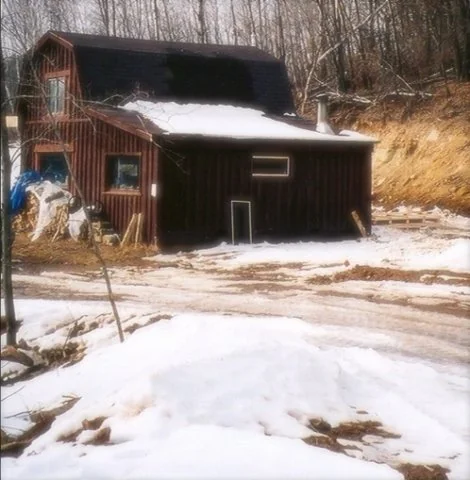
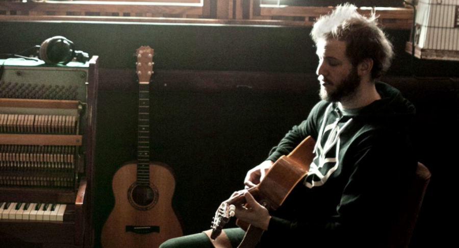

For Emma, Forever Ago - Bon Iver
Journal Entry - 11.25.2024
How do you deal with heartbreak?
In honor of it getting colder out, I would like to talk about an album that is very near and dear to me.
Bon Iver's For Emma, Forever Ago is one of the most deeply personal albums from the 21st century. Released in 2007, the album is the brainchild of Justin Vernon, who recorded the entire project in seclusion in a cabin in the woods of northern Wisconsin. Reeling from the frustrations of life, Vernon hoped to be alone. What emerged from this period was something hauntingly beautiful.
The cabin (pictured above) was his father's hunting retreat, nestled in the forests of Wisconsin. Growing up, Vernon spent summers fishing and winters hunting there with his father. At 26, he returned to the cabin, seeking solitude to process the end of a relationship and other frustrations in his life. He spent the harsh Wisconsin winter there with just a few belongings—most importantly, his guitar. In that seclusion, he poured every emotion into song, creating what remains one of the most raw and heartfelt albums in modern music. The production is so stripped back that it feels like you're right there with him in the cabin—though he likely wouldn’t have preferred the company.

Vernon instead allows the audience to follow along the progression of his healing and feel what he feels. He explores themes of being blindsided, unconditional love, and the desperate longing for someone who has already left.
"With all your lies, you're still very loveable" (For Emma - Track 8)
He emerged from that cabin with an album that revolutionized the music scene and helped define a new indie-folk era. For Emma, Forever Ago was celebrated for its originality and received widespread acclaim. The album catapulted Vernon and Bon Iver into the spotlight, where they continued to create critically acclaimed work, eventually winning Best New Artist and Album of the Year for their self-titled record in 2012.
It was about three years ago, around this time, when I first listened to For Emma, Forever Ago. I was a sophomore at Indiana University, trying to find my footing. The emotions and themes of the album deeply resonated with me as I navigated a period of significant change in my life. While I had heard a handful of songs from the album before, they had never sounded the way they did that winter. I truly believe music has a way of finding us when we’re ready for it, and For Emma, Forever Ago is a testament to that.
To this day, it is one of the only albums that I will always have downloaded in my phone.
For me, this album is one of the purest portrayals of what it means to truly "feel your feelings". It's easy to shut down when you're hurting, but to use one's sorrow and pain and paint the beauty of emotions is a wonderful thing.
"Emma isn't a person. Emma is a place that you get stuck in. Emma's a pain that you can't erase."
Talk Soon - Griffin